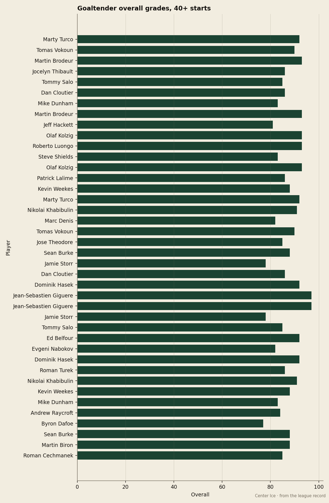
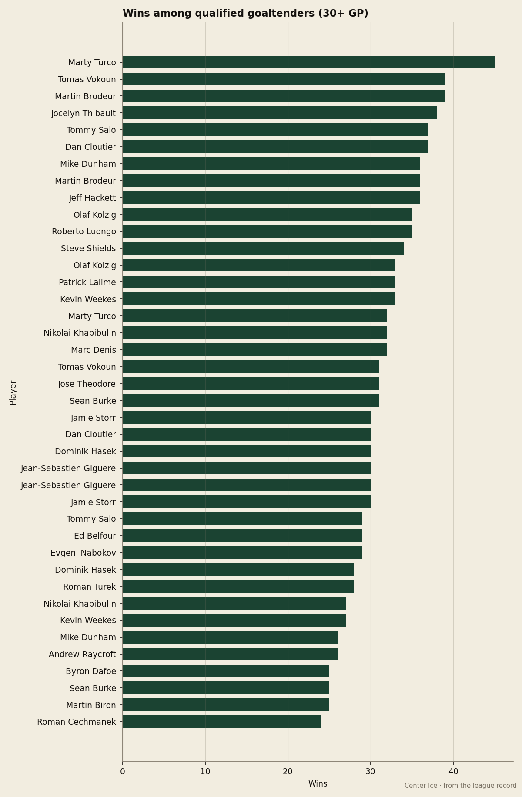
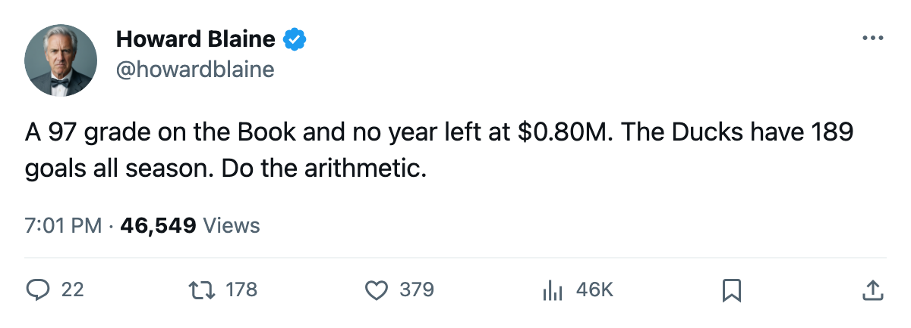
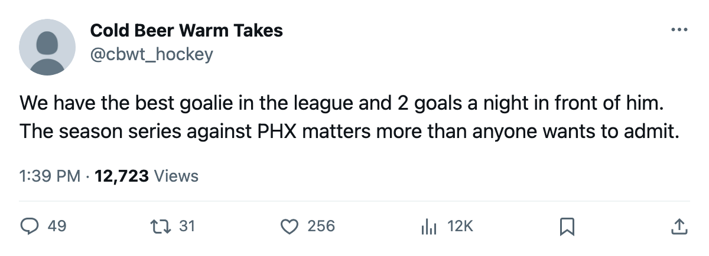

Giguere grades 97, the highest of any goaltender by 4 points, and has no year left at $0.80M
Anaheim scores 189 goals, fewer than any club above 70 points in either conference, and sits 6th in the West on the arithmetic of one man in net whose contract expires in the summer
 Howard BlaineSenior writer, The Blaine Rankings · The Hockey Gazette
Howard BlaineSenior writer, The Blaine Rankings · The Hockey Gazette
 Jean-Sebastien Giguere93 grades 97 in the Bureau's Book, 4 points clear of
Jean-Sebastien Giguere93 grades 97 in the Bureau's Book, 4 points clear of  Martin Brodeur95,
Martin Brodeur95,  Olaf Kolzig82 and
Olaf Kolzig82 and  Roberto Luongo95 at 93. He is the highest-graded goaltender in the league by the widest single-season margin the index has produced this year, and his contract pays him $0.80M with no year left after this one.
Roberto Luongo95 at 93. He is the highest-graded goaltender in the league by the widest single-season margin the index has produced this year, and his contract pays him $0.80M with no year left after this one.
For  Mighty Ducks of Anaheim and the West's 8th-place scramble, the 97 is the whole argument. The Ducks sit 6th at 78 points, 14 ahead of
Mighty Ducks of Anaheim and the West's 8th-place scramble, the 97 is the whole argument. The Ducks sit 6th at 78 points, 14 ahead of  Phoenix Coyotes in 8th, on a $41.01M payroll that the ledger prices at $0.53M per point, the 2nd-best rate in hockey behind
Phoenix Coyotes in 8th, on a $41.01M payroll that the ledger prices at $0.53M per point, the 2nd-best rate in hockey behind  Vancouver Canucks at $0.41M. The reason is the goaltender. Giguere has 30 wins in 55 starts, a 2.54 goals-against average and a .876 save percentage, each matching Brodeur for the best in the league. He is doing that on a salary that would be the 3rd-cheapest of any goaltender in the league if you sorted the Book's top ten by what they cost.
Vancouver Canucks at $0.41M. The reason is the goaltender. Giguere has 30 wins in 55 starts, a 2.54 goals-against average and a .876 save percentage, each matching Brodeur for the best in the league. He is doing that on a salary that would be the 3rd-cheapest of any goaltender in the league if you sorted the Book's top ten by what they cost.

The roster around him explains why Anaheim needs the 97 and cannot replace it cheaply. The Ducks score 189 goals. Every club above 70 points in either conference scores more; the next-closest is  New Jersey Devils at 206. Giguere's best offensive teammate is
New Jersey Devils at 206. Giguere's best offensive teammate is  Sergei Fedorov86, 35 years old, graded 90, with 95 points in 64 games and 65 goals. Behind Fedorov the lineup drops to
Sergei Fedorov86, 35 years old, graded 90, with 95 points in 64 games and 65 goals. Behind Fedorov the lineup drops to  Vaclav Prospal73 at 80,
Vaclav Prospal73 at 80,  Erik Cole75 at 79 and
Erik Cole75 at 79 and  Niclas Havelid73 at 77. The top scorer outside Fedorov is not on the sheet's top 30 in hockey.
Niclas Havelid73 at 77. The top scorer outside Fedorov is not on the sheet's top 30 in hockey.
The overtime problem the goaltender cannot solve
Anaheim has played 19 games that reached overtime, the 3rd-most in the league behind  Carolina Hurricanes (23) and
Carolina Hurricanes (23) and  Edmonton Oilers (20). The Ducks have lost 12 of those 19. They draw 33.3 percent of their points from games they should have finished in 60 minutes. That is the structure of a club that cannot put a game away and survives on the goaltender making the extra save in the third period to force the extra frame, then losing it anyway.
Edmonton Oilers (20). The Ducks have lost 12 of those 19. They draw 33.3 percent of their points from games they should have finished in 60 minutes. That is the structure of a club that cannot put a game away and survives on the goaltender making the extra save in the third period to force the extra frame, then losing it anyway.
His Development Index is +3 above his base grade of 93, and his morale sits at 94. He has been traded once in six seasons and has been in Anaheim since before the record opened, making him the longest-tenured piece on a club whose general manager must decide by March 19 what the calendar has as the trade deadline.
The question is whether $0.80M closes a gap of 4 points in the Book over the next-best goaltender available, because no one on the open market or on waivers closes a gap like that for that money.

What the Vezina says and what it does not
The Vezina race this spring belongs to Brodeur on wins (36 to Giguere's 30) and team standing (2nd in the East to 6th in the West). Giguere matches the Devils' goaltender on GAA and save percentage and grades 4 points higher in the Book. That is a gap the Bureau has never manufactured out of nothing. Brodeur has 0 shutouts in 51 games and Giguere has 0 in 55, a wash. The Vezina voters may not read it the same way.
The Vezina is Brodeur's to manage. Anaheim needs the math, and the math is plain. The Ducks are 14 points ahead of 8th with 18 games left. They have played 29.7 percent of their games into overtime and they have scored 25 goals in their last 10, 2.5 a night. The path to the postseason is Giguere, every night, for 18 more nights, because the goals are not coming.
The week ahead
Anaheim opens the week tonight at Phoenix Coyotes, a club on a 5-game winning streak that sits 8th in the West at 64 points. The series stands at 1-2-0 to the Ducks with a 7-6 goal difference to Coyotes across three meetings. If Phoenix Coyotes wins tonight, the gap closes to 12 and the Coyotes cut the distance in half over the course of the season's remaining Pacific games. It is the arithmetic the Ducks have to manage while their general manager decides what the highest-graded goaltender in hockey is worth on the open market.
Giguere's contract year is the single most consequential asset question in the West outside of  Colorado Avalanche's payroll and Edmonton Oilers's
Colorado Avalanche's payroll and Edmonton Oilers's  Ryan Smyth86 situation, and unlike those clubs Anaheim cannot solve it by spending more. The payroll is the 5th-lowest in the league. The 97 is the highest grade in the league. The $0.80M is what a 27-year-old goaltender costs who has not yet been made to feel what he is worth.
Ryan Smyth86 situation, and unlike those clubs Anaheim cannot solve it by spending more. The payroll is the 5th-lowest in the league. The 97 is the highest grade in the league. The $0.80M is what a 27-year-old goaltender costs who has not yet been made to feel what he is worth.

